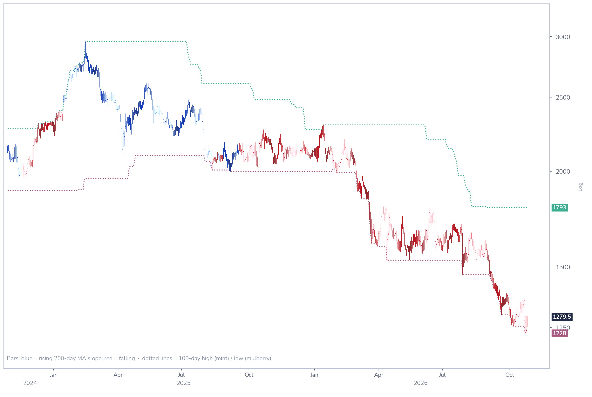

Hermès: technical charts
RMS FPChart 3 · RMS: trend, momentum and relative strength
Daily · 50-day (blue) and 200-day (red) averages with Bollinger bands · Stochastic · Ratio to the Stoxx 600 with its 200-day average

The share trades below a steeply falling 200-day average and has broken its September low; the stochastic is deeply oversold, and relative strength is at a one-year low.
Chart 4 · RMS: breakout and long-term momentum
Bars blue when the 200-day average is rising, red when it is falling · Dotted lines: 100-day high and low

A new 100-day low at EUR 1,228 on 23 October; the 100-day high (EUR 1,793) has not been broken since 15 January 2026.
Charts as of 26 October 2026. Source: Syz Research, Bloomberg.